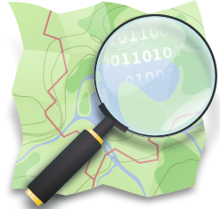

- GIS Fieldwork
- CaerusGeo Demo Introduction (PDF)
- CaerusGeo Walk Through
- Community Mapping
- Participatory GIS (Nepal)
- CaerusGeo
 QGIS Manuals
QGIS Manuals- Dale Kunce, Senior Geospatial Engineer
- Robert Banick, Field GIS Coordinator
- Emma Folkman, Systems Administrator
GIS Fieldwork and
Participatory Mapping
Overview
The GIS office at American Red Cross is deeply involved in international disaster response and disaster preparedness programs throughout the world. The training materials and links on this site were compiled for a training in Nepal. Some of the scenarios may not be geographically relevant in other countries but the concepts and tools will still be valid.
Open Street Map (OSM)
Open Street Map (OSM) is a free worldwide map. The data is free to download and use under its open license. Anyone can contribute to the map.
LearnOSM provides easy to understand, step-by-step guides for you to get started with contributing to OSM, using OSM, and using OSM data. The guides are official Humanitarian Open Street Map Team (HOT) OSM learning materials.
 CaerusGeo
CaerusGeo
CaerusGeo drastically simplifies GIS data collection for Red Cross projects. Volunteers and staff can create GIS data with nothing more than pen and paper. Users draw important features on paper and note additional attributes on an accompanying spreadsheet; when users later enter data through the simple web interface, it's automatically transformed into usable data for GIS staff.
QGIS
QGIS is a a user friendly Open Source Geographic Information System (GIS) licensed under the GNU General Public License. QGIS is an official project of the Open Source Geospatial Foundation (OSGeo). It runs on Linux, Unix, Mac OSX, Windows, and Android and supports numerous vector, raster, and database formats and functionalities.
geojson.io
geojson.io is a fast, simple, online tool to edit and share map data. It can be used to display multiple datasets on one basemap as a first step for producing a basic print map. It is used in the Simple Map Production guide.
Inkscape
Inkscape is an Open Source vector graphics editor. Its many features and streamlined interface make it a useful tool for styling maps. It is used in the Simple Map Production guide.